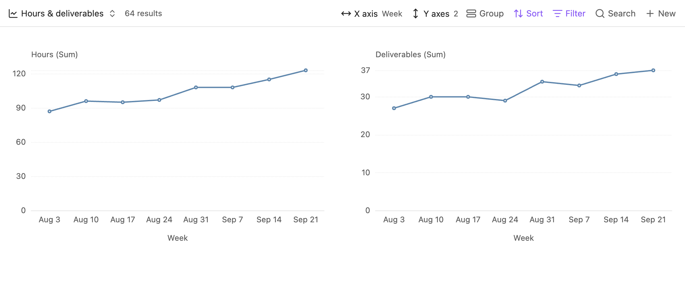
Multiple Y properties
Hours and deliverables in separate charts, with an aggregation for each property.
English UI Gallery
Chart types, settings, and source-file dialogs in Obsidian.
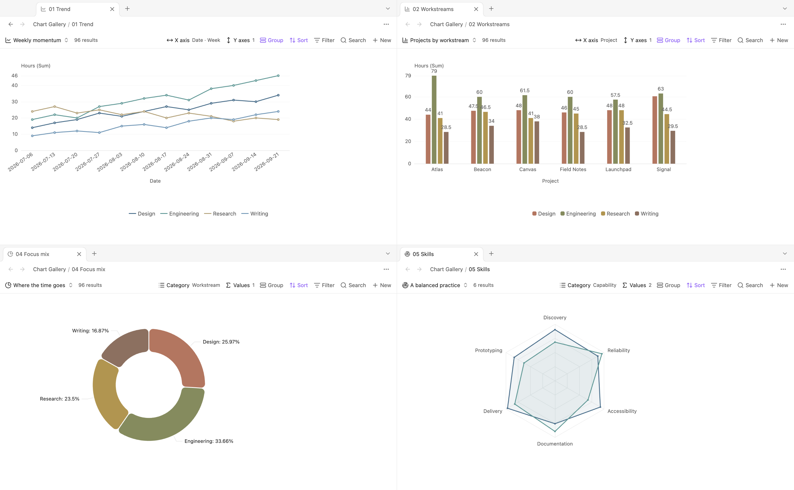
Select an image to enlarge it.

Hours and deliverables in separate charts, with an aggregation for each property.
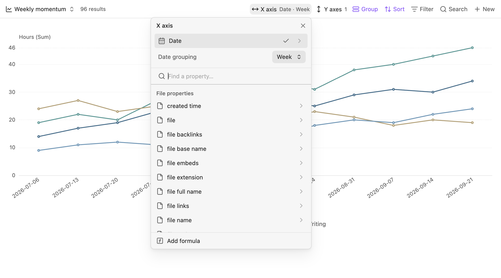
The Date property grouped into calendar weeks from the X-axis picker.
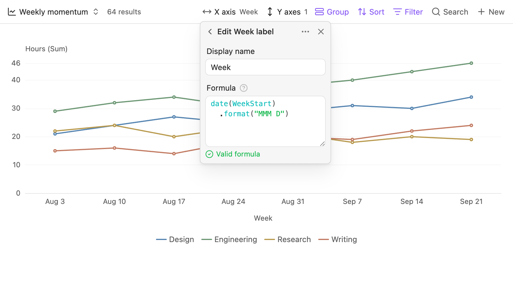
The native Bases editor showing the Week label formula.
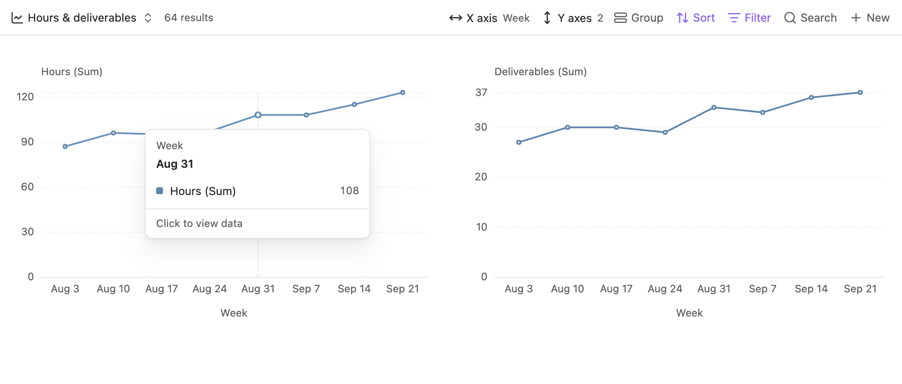
A vertical guide and tooltip for a column containing one selectable point.
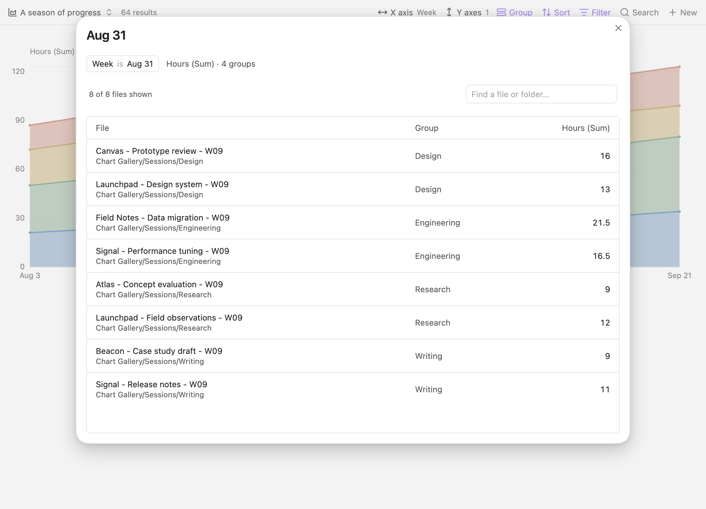
A data dialog over the chart view, listing the eight files in the selected week.
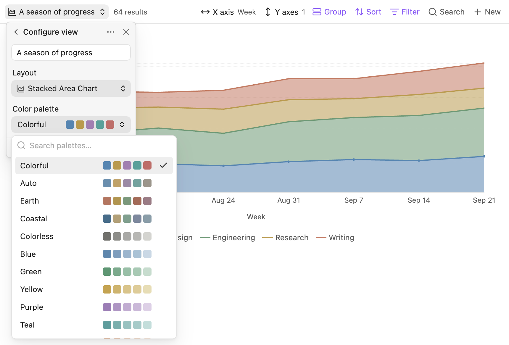
The view's palette picker with color swatches and the current selection.
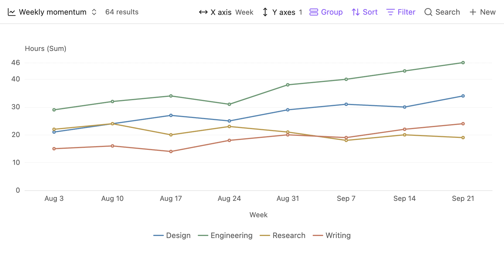
Hours across eight weeks, grouped into four workstreams.
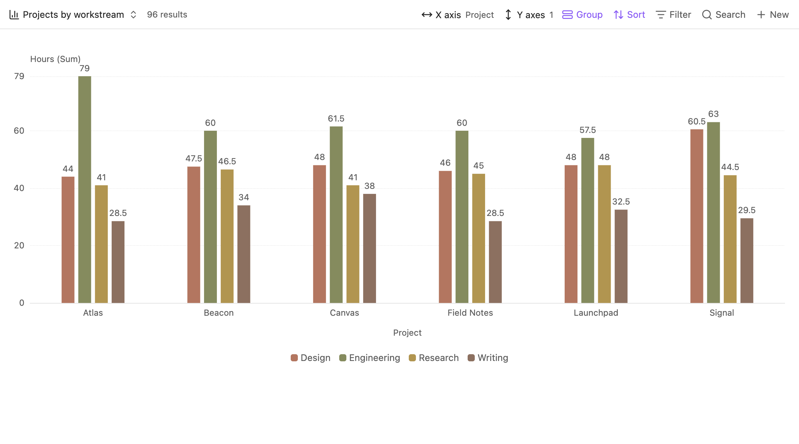
Hours by project and workstream, with value labels.
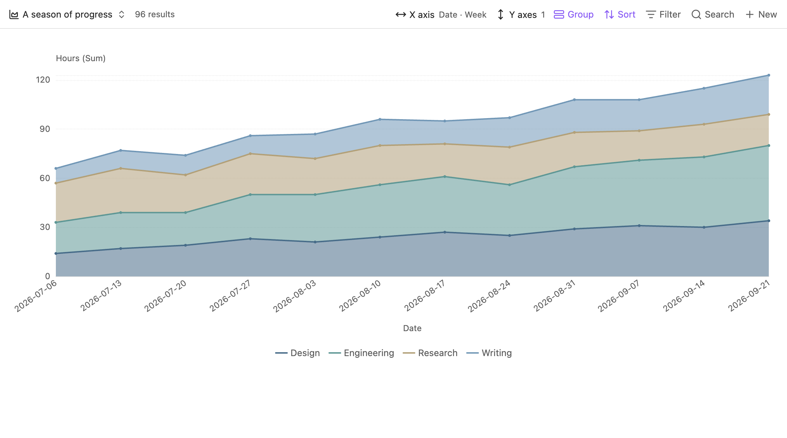
Workstream hours stacked by week.
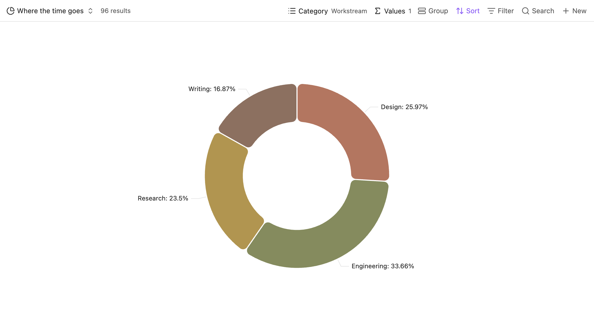
Workstream proportions displayed as a donut with percentage labels.
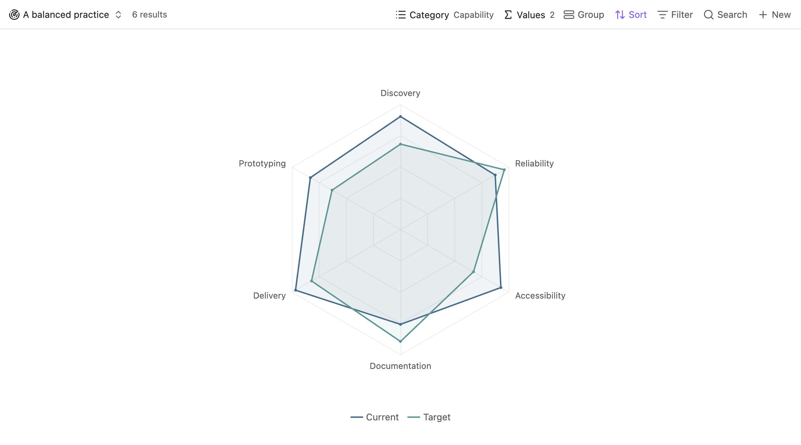
Current and target values across six capabilities.
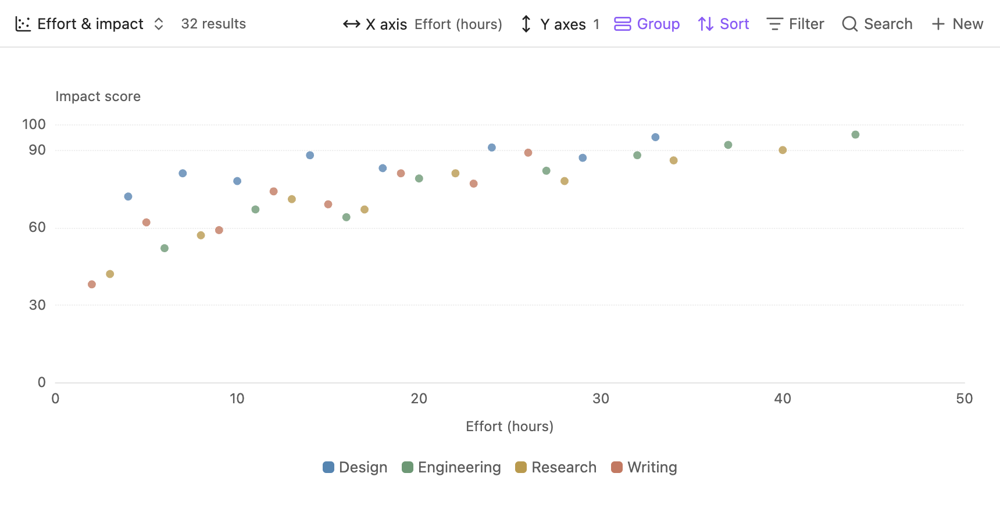
Effort and impact for 32 initiatives, colored by workstream.
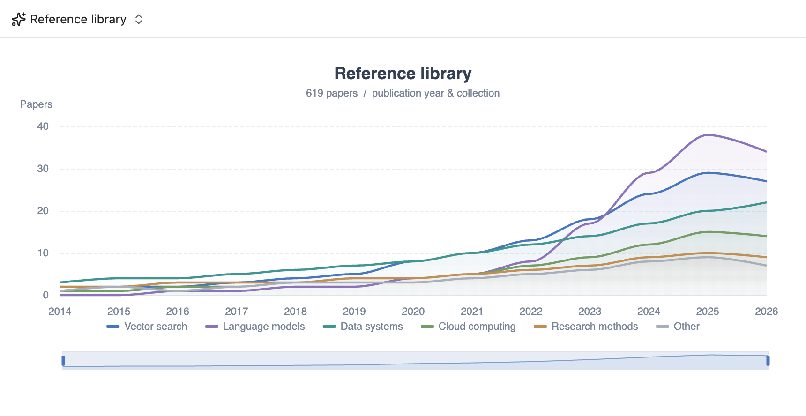
A saved ECharts timeline with six research collections and a zoom slider.
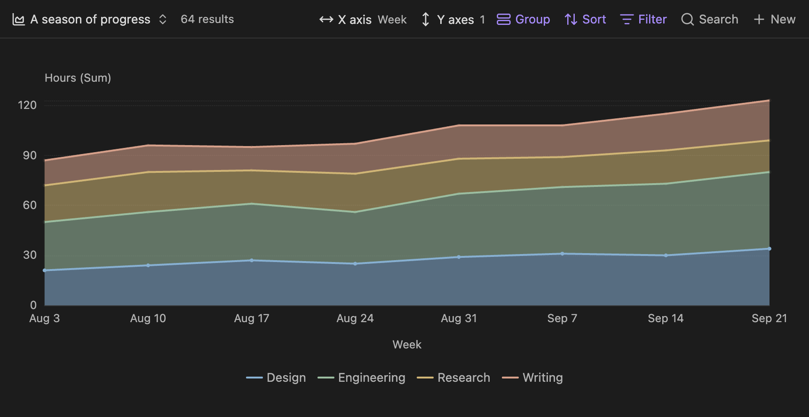
The stacked area view and its controls in Obsidian's dark theme.
The chart views use generated work sessions, capability records, and initiative records.
Latest plugin source: aad7b63. The AI Chart example renders a saved ECharts timeline. It does not show a Claudian generation session or a live query of sample notes.